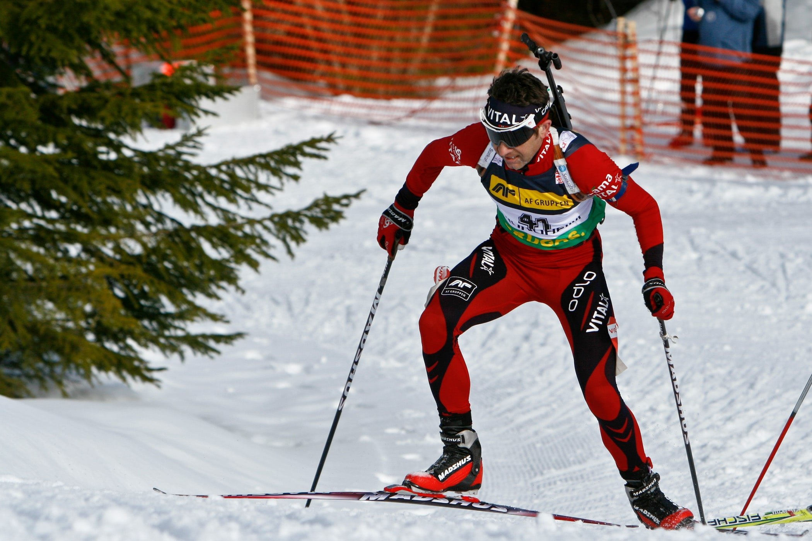
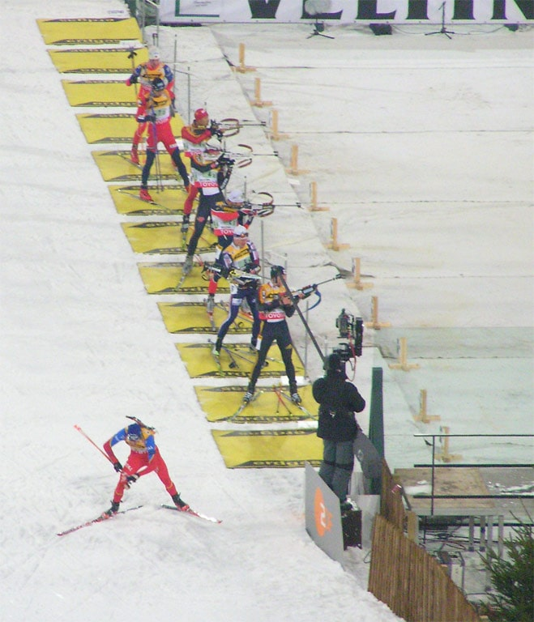

Atletik Atıcılık Sporları

- IBU Biatlon, kros kayağı (normalde serbest stil paten kayağı) ve .22 LR tüfeklerle atış yapmayı birleştiren bir Kış Olimpik sporudur. İskandinavya'da disiplin basitçe "Kayak Atıcılığı" olarak bilinir (İsveççe: skidskytte, Danca: skiskydning, Norveççe: skiskyting ).
- Bisiklet biatlonu veya velo biatlonu (Rusça Велобиатлон ), bisiklet sürmeyi (yol veya dağ bisikleti) ve atıcılığı (tabanca veya tüfek) birleştirir.
- ISSF Hedef Sprint , orta menzilli koşu (3 × 400 m) ve havalı tüfek atışını birleştirir .
- Modern pentatlon , bir Yaz Olimpik sporudur ve orijinal beş parçasından biri olarak lazer havalı tabanca ile 4 tur zamanlı atış ile birleştirilmiş 800 metrelik 4 turdan oluşan Laser-run adı verilen birleşik bir etkinliği içerir.
- İskandinav Kayak Alanı Atıcılığı (Norveççe: skifeltskyting , İsveççe: skidfältskytte ), Norveç Ulusal Tüfek Derneği ve İsveç Atıcılık Sporları Derneği tarafından modern biatlonun kökenlerine dayanan bir İskandinav disiplinidir . Normalde klasik (pist içi) kayak kullanılarak yapılır, ancak yarışmalar serbest stil kaykay formatında da yapılabilir. Ayrıca, atışlar tam çaplı kalibrelerle ve genellikle sahada geçici atış poligonlarından yapılır. Disiplin, modern biatlonun yakın habercisi olarak kabul edilir.
- Kros koşusu ile Nordik atıcılık (Norveççe: skogsløp , İsveççe: springfältskytte ), Norveç Ulusal Tüfek Derneği ve İsveç Atıcılık Sporları Derneği tarafından koşu ile atıcılığı birleştiren bir İskandinav disiplinidir . Ski Field Shooting'in yaz baskısı olarak kabul edilir. Koşu mesafeleri genellikle 2 ila 3 atış serisi ile 2 ila 3 kilometre arasındadır.
- Askeri devriye , sporcuların kros kayağı, kayakla dağcılık ve tüfek atışlarında yarıştığı bir takım kış sporuydu . Genellikle ülkeler veya askeri birlikler arasında çekişilirdi .
- Geyik biatonu (Fince Hirvenhiihto), kros kayağı, menzil tahmini ve geyiğin kağıt hedeflerine tüfekle atış yapmayı içeren bir biatlon çeşididir. Kros koşusu ile geyik vurma (Fin Hirvenjuoksu ), kayak bölümünün koşuyla değiştirildiği bir yaz çeşididir.
- Oryantiring atıcılığı (Fin ampumasuunnistus), atıcılığı oryantiring ile birleştirir ve yarışmalar Danimarka'da DMSA , İsveç'te sivil İsveç Çoklu Spor Derneği ve Finlandiya'da FRSF tarafından düzenlenir .
- FRSF tarafından Finlandiya'da düzenlenen arazi koşusu ( maastokilpailu ) ile tabancayla atış .
- Tabanca kayağı (Norveç tabancalangren, İsveç tabancaskidskytte , Fin pistooliammuntahiihto) tabancalar ve revolverlerle biatlondur ve Norveç'te NROF , İsveç'te SPSA ve Finlandiya'da FRSF tarafından organize edilir .
- Yaz biatlonu , kayağın yerini koşu veya tekerlekli kaykaylara bırakıyor , Almanya'da popüler .
- Kayaklı Okçuluk, okçuluk nişancılığını kros kayağı ile birleştiren bir biatlon çeşididir.
- Sualtında hedef atıcılık , serbest dalış veya Apne tekniği kullanılarak bir yüzme havuzunda gerçekleştirilen bir dizi bireysel ve takım etkinliği aracılığıyla yarışmacıların zıpkını doğru bir şekilde kullanma becerilerini test eden kombine bir su altı ve atış sporudur.
Biatlon

Biatlon , kros kayağı ile tüfek atışını birleştiren bir kış sporudur . Yarışmacıların mesafesi atış turlarına bölünmüş bir kros parkurunda kayak yaptıkları bir yarış olarak ele alınır. Atış turları kendi başına zamanlanmış değildir, ancak müsabakaya bağlı olarak kaçırılan şutlar, yarışmacının toplamına fazladan mesafe veya sürenin eklenmesiyle sonuçlanır.
Temel kavramlar
Bir biatlon müsabakası, yarışmacıların toplam mesafenin yarısı yüzüstü pozisyonda, diğer yarısı ayakta olmak üzere iki veya dört atış turuna bölünmüş bir arazi koşusu sisteminde kayak yaptıkları bir yarıştan oluşur. Atış performansına bağlı olarak, yarışmacının toplam kayak mesafesine/süresine ekstra mesafe veya süre eklenir. En kısa toplam süreye sahip yarışmacı kazanır.
Her atış turu için, biatlet beş hedefi vurmalı veya kaçırılan her hedef için, yarışma kurallarına göre aşağıdaki gibi değişen bir ceza almalıdır:
- 150 m'lik (492,13 ft) bir ceza döngüsü çevresinde kayak yapmak - hava ve kar koşullarına bağlı olarak elit biatletlerin tamamlaması genellikle 20-30 saniye sürer.
- Kayakçının toplam süresine bir dakika eklenir.
- Hedefi vurmak için (atış poligonuna yerleştirilmiş) fazladan bir fişeğin kullanılması; her tur için bu tür yalnızca üç ekstra mevcuttur ve ayakta kalan her hedef için bir ceza döngüsü yapılmalıdır.
Bir yarış boyunca yarışmacıların ilerleyişini ve göreceli duruşunu takip etmek için , kayak pisti boyunca birkaç noktada ve her atış turunu tamamladıktan sonra ara zamanlar (ara zamanlar) alınır. Genellikle biatlon arenalarında kurulan büyük ekranlar ve TV görüntüsünün bir parçası olarak gösterilen bilgi grafikleri, tipik olarak en hızlı yarışmacının her bir ara noktada ayrılma süresini ve en yakın koşuculara olan süreler ve zaman farklarını listeler.